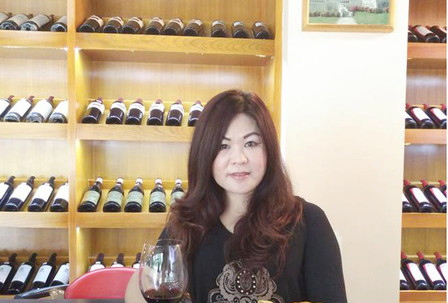
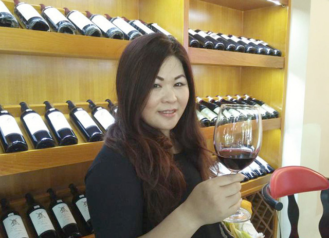

吴永红，别人尊称她为红姐，她已经在商场上打拼20多年。从93年开始，已经前后开了20多家化妆品美容连锁店，她的事业一路畅通无阻，节节攀升。2005年，经营的品牌公司的连锁店在东莞有200多家，有50%是红姐的加盟店。现在，红姐除了拥有自己原有的事业之外，还是美隆实业东莞分公司代表。
Q:红姐您好！您的事业一直那么成功，有什么秘诀吗？
A:我的座右铭是不断创造人生的生存意义和价值，所以在发展事业的时候我不断追求创新，只有不断发现新的事物，追求更高的目标，才能让自己变得更加卓越。不管是做人也好，做事业也好，都是一样的道理。固步自封，满足于现状，很容易让自己变得平庸。人可以安于现状，但是不能满足于现状，不断地转变、适应新的东西，才不会被时代的大潮淹没。
Q:您之前更多的时间都是专注于美容行业，现在进军红酒行业，是第一次接触红酒吗？
A:虽然我主要的事业是在美容行业，但是我之前也有涉足过红酒行业，对红酒有一定的了解。零几年的时候就已经对红酒产生浓厚的兴趣，2010年开过红酒会所，但是以前都是做传统的销售，一般会把红酒销售到清吧、酒店，或者承包个人聚会的餐饮，还没有做到线上销售这一块。
Q:在成为美隆实业东莞分公司代表之前，您听说过移动互联网+的营销模式吗？
A:有听说过微商，也非常感兴趣，因为我在经营自己事业的时候也听说过客户和朋友在说这个事情，那时候我就嗅到了商机的味道。我经营事业都是紧跟时代步伐走的，因为我深知只有跟着潮流走才能取得更大的成功。所以我一直有关注微营销行业，但是一直没有寻觅到合适的公司合作，直到遇到了广东美隆实业。
Q：那您认为广东美隆实业的优势在哪里呢？您选择它的理由是什么呢？
A：我认为美隆公司兼顾线上线下销售，既保留了传统销售模式的优势，也开启了一个新的销售方式，具有很大的发展潜力。而且7月4号，国务院发布了《关于积极推进“互联网+”行动的指导意见》，这一文件的发布，将意味着“互联网+”正式从概念上升为国家行动，“互联网+”是大势所趋。从这个新闻，我就知道我这次的选择非常正确。
Q:在微营销模式中，化妆品市场已经相当成熟了，而且您之前从事了美容行业那么多年，也取得了那么大的成功，为什么不选择自己更加熟悉的化妆品市场来做呢？
A：我是一个追求创新的人，在美容行业已经做了那么久了，总希望接触其他东西，挑战不一样的事物。而且之前其他美容公司提供给我的线上营销方案，我都觉得不是我想要的，所以一直没有开启线上事业，而是一直在寻觅。
Q：您现在兼顾多份事业，您打算怎么去分配时间，去经营新的事业呢？
A:首先要做好长期发展的规划，按照计划一步步实现目标。我会通过招商，招各地区的总代理，建立一个核心的营销团队，做好产品的营销策划方案，在最短的时间内做到最快速的发展。
Q:您对未来分公司的发展有什么期待？
A:我希望我的东莞分公司在2—3年内业务范围要覆盖全东莞，而旗下的代理商能做到更多区域的业务。
红姐以实际行动践行了她“不断创造人生的生存意义和价值”的人生信条，以不断求新的精神，攀登事业的高峰。她独具慧眼地选择了移动互联网+的营销模式、富有远见地选择了广东美隆实业投资有限公司作为合作伙伴，相信在她精心经营之下，东莞分公司会在最短的时间内以最快的速度发展，业务遍布全东莞。
下一篇：【赖国雄】涉足红酒微商的先行者